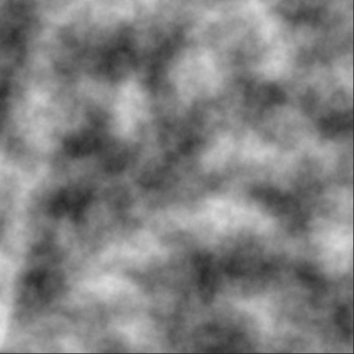
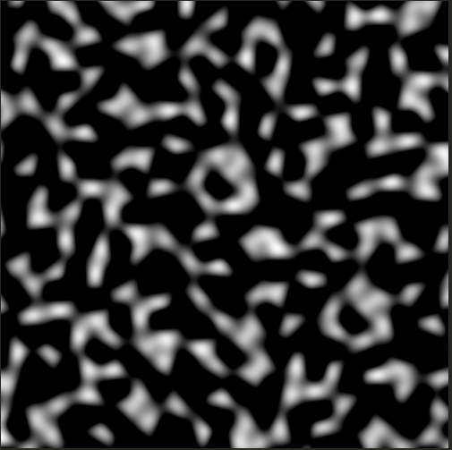
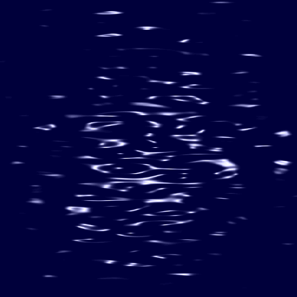

A Weblog
Astrophotography: Trials and Tribulations
July 13, 2020
Okay, so last week I began my journey into astrophotography. Let's just say it's been educational.
I'll start by showing off my setup.
A lens support bracket that I built from some stuff I picked up from the hardware store. Planning to add some rubber tape, support for the lens, a velcro strap, and a little knob to screw in the camera easier.

Using a Sony a6000 with an old school Olympus 85-300mm lens that I order off of ebay for like 50 bucks.


Since my balcony has a pretty good view of the south-southeastern sky, I started there to look for some cool deep space objects.
I decided to start with the blue horsehead nebula, since it has a magnitude of 4.03 and is quite large.
Once I worked out the kinks with the auto shutter/continuous shooting and getting enough storage, I immediately ran into issues. Since the nebula is kinda close to the horizon the lens flare from the street lights was giving me some serious issues and limited the amount of time I could shoot for. This is what 5 minutes of integration looks like,

and even then you can still see some flare in the upper left corner. You can also see some vignetting, which I didn't really notice at the time.
So I decide to switch to a different target, something higher up in the sky. Even though it's kinda small for a 300mm lens, I picked the Dumbbell Nebula. Apparently it's quite easy for beginners, so even if it did turn out to be tiny, why the hell not?
1 hour and 43 minutes of integration at 64000 iso, 300mm

Super cool, even though it's faint and a little blurry. At this point, I kinda clued into the fact that a having wide open aperture was causing the vignette effect and also contributing to the lack of sharpness in the final image.
So last night I fixed my lens on the Veil Nebula. My reasoning was that first off, It's huge. Secondly, it has a magnitude of 7.00 which is like 0.40 brighter than the dumbbell nebula. What I didn't consider was that surface brightness is 18.15 meg/arcmin. This basically means that the object itself is bright, but the brightness per surface area is not. Another lesson learned: magnitude is important, but so is the object size. So, that paired with the fact that I was using a smaller aperture lead to disappointing results.

There were some positives though. The smaller aperture did eliminate the vignette and I also found that the stars (even though they're trailing a little) are sharper.
It is really faint but if you look hard enough you can kinda start to see the nebula showing up, which is kinda neat!

Not going to lie, manually tracking stars for hours on end and waiting hours for images to be processed/stacked only to get a crappy picture is really discouraging. Even though I don't have anything amazing to show for my efforts, I'm determined to capture something incredible.
Here's a list of the software/sites that I found useful.
- Stacking: Deep Space Stacker
- Stretching and processing: Photoshop cc 2019
- Locating DSOs and getting info: Stellarium
- Observation conditions Clear Dark Sky
A continuation of my exploration of noise.
June 11, 2020
So after creating the bodies of water, I needed a way to give them "life". After some googling, I came across this twitter post
and thought it looked pretty badass. So for the most part, that's what I was using for a reference.
First things first was creating a way to calculate simplex noise. I'm lazy naturally, so instead of reinventing the wheel
I found this awesome resource for noise functions.
This was the noise code that was used to generate the follwing image.
vec3 permute(vec3 x) { return mod(((x*34.0)+1.0)*x, 289.0); }
float snoise(vec2 v){
const vec4 C = vec4(0.211324865405187, 0.366025403784439, -0.577350269189626, 0.024390243902439);
vec2 i = floor(v + dot(v, C.yy) );
vec2 x0 = v - i + dot(i, C.xx);
vec2 i1;
i1 = (x0.x > x0.y) ? vec2(1.0, 0.0) : vec2(0.0, 1.0);
vec4 x12 = x0.xyxy + C.xxzz;
x12.xy -= i1;
i = mod(i, 289.0);
vec3 p = permute( permute( i.y + vec3(0.0, i1.y, 1.0 ))
+ i.x + vec3(0.0, i1.x, 1.0 ));
vec3 m = max(0.5 - vec3(dot(x0,x0), dot(x12.xy,x12.xy), dot(x12.zw,x12.zw)), 0.0);
m = m*m ;
m = m*m ;
vec3 x = 2.0 * fract(p * C.www) - 1.0;
vec3 h = abs(x) - 0.5;
vec3 ox = floor(x + 0.5);
vec3 a0 = x - ox;
m *= 1.79284291400159 - 0.85373472095314 * ( a0*a0 + h*h );
vec3 g;
g.x = a0.x * x0.x + h.x * x0.y;
g.yz = a0.yz * x12.xz + h.yz * x12.yw;
return 130.0 * dot(m, g);
}
float OctavePerlin(vec2 v, float persistence) {
float total = 0.0;
float frequency = 1.0;
float amplitude = 1.0;
float maxValue = 0.0; // Used for normalizing result to 0.0 - 1.0
for(int i = 0; i < 8; i++) {
total += snoise(v * frequency) * amplitude;
maxValue += amplitude;
amplitude *= persistence;
frequency *= 2.0;
}
return total/maxValue;
}
And here are the results, which look as expected
Now it's time to start messing around and trying to get this to look like water! I first started by reducing the number of octaves to 1, which gives it a more "blobby" look.
To give the illusion of movement, we need this bad boy to start scrolling, which is quite simple.
float time = u_time;
vec3 color = vec3(0.0);
vec2 vel = vec2(-1.,0.0) * time;
color = vec3(OctavePerlin(pos + vel, 0.5));

I then stretch the texture using a scale matrix.

It reall starts to come to life when using two scrolling textures.
float time = u_time;
vec3 color = vec3(0.0);
vec2 vel1 = vec2(-1.,0.0)*time;
vec2 vel2 = vec2(1.0,0.0)*time;
color = vec3(OctavePerlin(pos + vel1, 0.5));
color += vec3(OctavePerlin(pos + vel2, 0.5));

I really like the look and movement at this point. The only problem is that this doesn't look like water.
The idea is that this black and white scrolling texture is a height map, so all we need to do is find a way to convert a height map into a normal map.
This is accomplished by using image processing technique called the Sobel operator. So by sampling the surrounding pixels in the image, we can calculate the approximate direction of the normal.
This is the result

and the final product with a simple phong shader
I'm pretty happy with these results. This will really come to life with reflections (SSR) which is the next thing I'm going to tackle.
Noise and Terrain Generation
June 04, 2020
I've started to work on my game project once again and wanted to start creating interesting and natural enviroments.
In the past I've spent a ludicris amount of time mundanly placing objects around a map. Not only is this boring, but it's painful. So this time around I decided to create procedural maps with automatic foliage placement by using a combination of possian disk distribution and perlin noise.
I was inspired by this video on procedural environments for FarCry 5.
This post mainly deals with generating the main terrain height map and isolating the lowest (or darkest) regions into
a wavefront obj file.
I started by generating a simple image of simplex noise.
import noise
def genTerrain(size, scale):
dimensions = (size, size)
octaves = 5
persistence = 0.5
lacunarity = 2.0
offset = 0.5
noiseMap = np.zeros(dimensions)
for i in range(dimensions[0]):
for j in range(dimensions[1]):
noiseMap[i][j] = (noise.snoise2(
i/scale,
j/scale,
octaves=octaves,
persistence=persistence,
lacunarity=lacunarity,
repeatx=size,
repeaty=size,
base=0) + offset)
return noiseMap
mapTerrain = genTerrain(1024, 500)

Next, I simplified the image by limiting the number of levels used. Here I'm using 8 levels of grey.
def colorNoiseMap(noiseMap, numberOfColors):
noiseMapColored = np.zeros(noiseMap.shape+(3,), dtype=np.uint8)
colorDict = getColorDict(numberOfColors)
buckets = [round(x, 5) for x in drange(0.0, 1.0, 1.0 / numberOfColors)]
for i in range(noiseMap.shape[0]):
for j in range(noiseMap.shape[1]):
bucket = take_closest(buckets, noiseMap[i][j])
noiseMapColored[i][j] = colorDict.get(bucket)
return noiseMapColored

I wanted the darker regions in the image to be the bodies of water and to have the lighter regions populated with trees, grass, and other foliage. Using cv2, I found the contours of each body of water and store that as a list of points.

Each of these contours are then triangulated (thanks to nickves) and stored into a wavefront obj file.
def createWavefrontOBJ(lakes):
vertices = []
polygons = []
for lake in lakes:
lakePoly = Polygon(lake)
if (lakePoly.is_valid):
lakeTriangles = triangulatePoints(lakePoly)
for t in lakeTriangles:
v = list(t.exterior.coords)
v1 = (v[0][0], v[0][1], 0.0)
v2 = (v[1][0], v[1][1], 0.0)
v3 = (v[2][0], v[2][1], 0.0)
vertices.append(v1)
vertices.append(v2)
vertices.append(v3)
size = len(vertices)
polygons.append((size-2,size-1,size))
f = open("water.obj", "w")
for v in vertices:
f.write("v "+str(v[0])+" "+str(v[1])+" "+str(v[2])+"\n")
f.write("\nvn 0.0 1.0 0.0\n\n")
for p in polygons:
f.write("f "+str(p[0])+"//1 "+str(p[1])+"//1 "+str(p[2])+"//1\n")
f.close()

The code is not the nicest, but I did have a lot of fun writing this up. The only
thing that was a pain was getting all the libraries installed correctly.
The next thing to do is create a shader for the water and create a way to place objects using poisson disk distribution, which shouldn't be difficult.